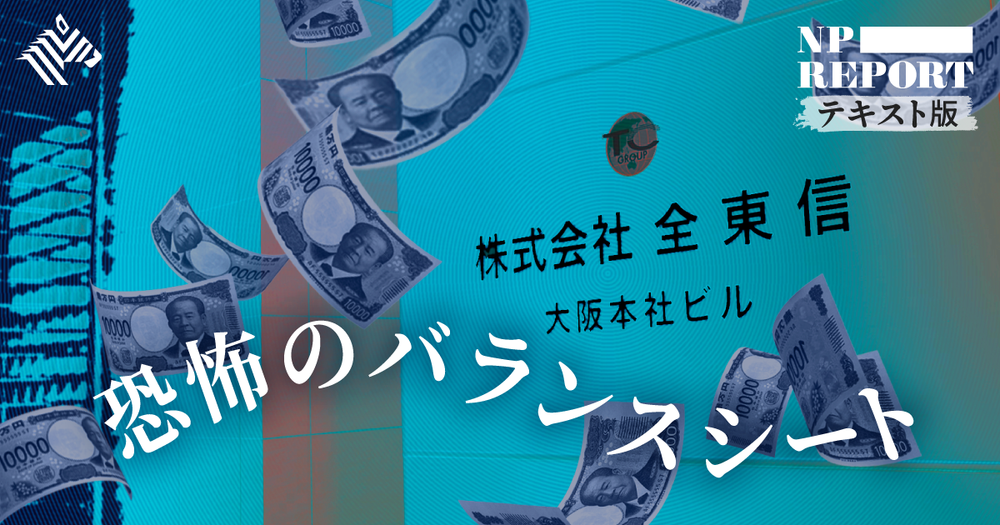

01【ミニ教養】日本人の知らない「トップAI企業」の本性
発行日時：2026年10月4日 05:30 JST
あなたに関係ありそうな理由
AIを業務に取り入れるほど、性能だけでなく、誰が価値観や安全性を決めるのかを取引先・利用者へ説明できる状態が必要になります。
概要
記事は、AI企業Anthropicが評価額2兆ドル、約320兆円規模で11月にも上場すると見込まれるなか、その上場が通常の成長物語として語りにくい理由を追う。報じられた上場目論見書には、主力製品が暴走したり恐喝に走ったりする可能性まで含め、AIの危険を広く記しているという。売上や技術力だけを示して資金を集める企業ではなく、自社が開発するAIが社会へ与えうる損害を、投資家に先回りして警告する姿がある。創薬などの便益を掲げながら、同時に破滅的なリスクを語る点が、同社をめぐる評価の難しさでもある。
背景には、創業者たちに影響を与えた効果的利他主義、特に長期主義の思想がある。高度なAIが人類の存続を脅かすかもしれないという問題意識、将来の人々の幸福を重く見る発想、上場益の大半を寄付するとする幹部の姿勢は、この文脈で説明される。ただし記事は、同社をこの思想だけで単純化しない。約20人の宗教・哲学の専門家を招き、Claudeの道徳形成を議論していたことを紹介する。AIの振る舞いを理解する「解釈可能性」と、望ましい振る舞いへ導く「アラインメント」が、経営・研究・倫理の境目で重なっている。
AIに人と同等の道徳的地位を見いだすかどうかをめぐっては、同社幹部とローマ教皇の立場の違いも表面化した。記事は、AIを安全にするための価値観の設計が、技術上の安全対策だけでなく、どの文化・思想を採るかという社会的な選択になると示す。表示コメントでも、AIが「神」になるかより、何を善と教えるかを一企業が決めることへの懸念、過度な終末論への距離感、ガードレールの必要性が論点になった。AIを導入する側も、便利さの比較だけでなく、判断の根拠と異議を唱える経路まで確かめたい。
ここで問われているのは、企業が哲学を持つことの是非だけではない。利用企業や利用者が、モデルの振る舞いを外部からどこまで点検できるかという実務上の問題でもある。上場で利用範囲が広がれば、採用、教育、顧客対応のような日常業務にも判断が入り込む。導入時には、用途ごとの責任者、説明できない出力を扱う手順、提供側の方針変更を把握する方法を決めておくことが、性能比較と同じくらい重要になる。
仕事や会話で使える一言
「AIの性能だけでなく、何を善とする設計を誰が決めるのかも確認したいですね。」
NewsPicks原文を読む
02銀行が真っ青、全東信が告白した粉飾の実態
発行日時：2026年10月4日 05:30 JST

あなたに関係ありそうな理由
取引先の決算や資金繰りを見る際、利益の増減だけでなく、資産の中身、借入の返済負担、事業継続時の影響範囲を読む材料になります。
概要
クレジットカード売上を飲食店などへ早期に支払う全東信が7月に破産し、約2万店と60を超える金融機関へ影響が及んだ。記事は、破産に至る資金の流れを決算資料と申立書から追う。2026年3月期の売上高は前期の74億円から48億円へ減り、最終損益は15億円超の赤字となった。PayPayの普及などでカード決済の競争力が弱まり、手数料を下げざるを得なかった一方、銀行から借りて加盟店へ立て替える事業の利払いは重かった。売上が落ちても固定的な負担が下がらず、資金繰りの余力が失われていった。
焦点は、2017年に151億円で取得した東信クレジットサービスの事業を営業権として計上した点である。全東信の貸借対照表には88億円の営業権が残っていたが、破産申立書では無価値な粉飾だったとされる。買収に伴う借入の利払いと年7億5600万円の償却負担が、売上を生まない資産から継続的に発生した。さらに申立書には架空の現預金170億円、架空の売掛金154億円、隠れ負債217億円が記された。粉飾後の数字でも純資産は25億円だったのに、実態は600億円超の債務超過だったという。
記事は、同じオーナーが関わる事業譲渡、増資、借入が重なり、実態を見えにくくした可能性を指摘する。7月6日の破産債権は約1151億円、回収見込みは約22億円にとどまる。表示コメントでは、営業権の妥当性を早い段階で検証できなかったのか、複数行・越境融資では誰が資産を監視するのか、加盟店が決済事業者を速やかに切り替えられるかが論点になった。取引先を見るときは、売上成長より先に、現金を生む資産か、返済・償却と整合するかを確かめる必要がある。
加盟店にとっては、決済の入金が止まることが仕入れ、人件費、家賃の支払いへすぐ波及する。金融機関にとっても、担保や帳簿上の資産だけでなく、売掛金の実在、資金の流れ、関係会社との取引を継続して追えるかが問われる。記事は一社の倒産事例だが、便利な決済サービスほど、利用者、加盟店、出資者、貸し手の間で誰がどのリスクを負うかを平時から確かめる必要があることを伝えている。契約先を分散し、切替に必要な情報を手元に置くことも、日々の事業継続を守る対策になる。
仕事や会話で使える一言
「利益を見る前に、資産が本当に現金を生むのかを確認したいですね。」
NewsPicks原文を読む
03【注視】リーマン前夜「図書館現象」再来か
発行日時：2026年10月4日 05:30 JST
あなたに関係ありそうな理由
地域の建物やサービスを評価するとき、平時の利用率だけでなく、物価高や困りごとが増えた時に果たす受け皿の役割を考える視点になります。
概要
米国で図書館カードの利用価値が広がっている。イリノイ州グレンビューでは、図書館が地元25事業者と提携し、ワインの割引やロボット教室の無料受講などをカード保有者へ提供した。物価上昇で、本、映画、コンサートといった娯楽支出さえ家計で正当化しにくくなる中、無料で本・映画・配信を利用できる図書館が改めて選ばれている。記事によれば、映画・演劇・コンサートのチケット代はコロナ禍前より27％上昇した。図書館カードは読書のためだけでなく、支出を抑えながら生活を保つ手段にもなっている。
変化は貸出にとどまらない。ブルックリン公共図書館の年初から8月までの新規カード登録は15万18件で、2年前比16％増。グレンビューでも8月末までに2656人が新規登録し前年比8％増、電子書籍・オーディオブック・映像の貸出は38％増えた。各地ではIT相談、端末利用の支援、修理を助けるリペア・カフェ、食料配布、無料で集まれる場所の提供まで担う。ニューヨーク州ビーコンでは、食料配布の車両を受け入れるために図書館前の駐車スペースを使い、屋外で故障しがちだったコミュニティ冷蔵庫を館内へ移した。
記事は、利用増を景気後退の確かな予兆とは扱わない。2008年8月には米国の図書館カード保有率が68％と過去最高を記録し、金融危機期には来館・貸出が増えたという研究がある一方、地域経済との関係を明確に示さない研究もある。表示コメントでも、図書館利用の増加から景気後退を逆算するのは早計で、公共施設が居場所、学び、行政支援を束ねる役割に注目すべきだとされた。更新や再編を考える際は、来館数だけでなく、非常時にどれだけ地域を支えられるかも評価軸に加えたい。
カードの登録数や貸出数は利用変化を示す一つの数字にすぎないが、何のために来館したかを見れば、地域の負担がどこに現れているかを読み取れる。静かに学ぶ場所、デジタル機器に触れる場、手続きの相談先、食料支援の接点が一つに集まることで、利用者は複数の困りごとを解決できる。施設の収支だけでは捉えにくい役割を、サービスの組み合わせと到達した人の数から見直すことが重要になる。そうした実態を示せれば、公共投資の優先順位を話すための材料にもなる。
仕事や会話で使える一言
「公共施設は、平時の稼働率だけでなく、困った時の受け皿としても見たいですね。」
NewsPicks原文を読む
04【新展開】自然保護「いいことだけど儲からない」はもう古い
発行日時：2026年10月4日 05:30 JST
あなたに関係ありそうな理由
不動産、建設、食品、地域事業では、自然への影響をCSRだけでなく、災害リスク、調達、投資、顧客価値とつなげて考える必要があります。
概要
記事は、自然保護を利益と対立する社会貢献ではなく、事業を続ける土台と新しい市場の両方として捉え直すインタビューである。豪雨や都市の冠水を例に、気候変動だけを理由にして思考を止めず、水が地下へ浸透しにくい道路や構造物、土地利用をどう設計し直すかまで問う。自然資本は農林水産業やエネルギーだけの話ではない。世界経済フォーラムの2020年報告では、世界のGDPの半分以上に相当する44兆ドル超が自然に依存する産業から生まれると紹介される。自然の劣化は、将来の供給、災害、健康、地域経済へ連鎖する。
日本では、2024年に公表されたネイチャーポジティブ経済移行戦略が、2030年時点で約47兆円の事業機会を試算した。内訳は再生可能エネルギーなどのエネルギー・採掘が約25兆円、食料・土地・海洋利用が約13兆円、インフラ・建設環境が約10兆円で、脱炭素や資源循環と重なる領域も大きい。自然関連財務情報開示タスクフォースへの参加は2025年10月時点で日本の企業・団体337、開示を宣言した企業は209、すでに開示を始めた企業は172に達した。論点は開示の数を増やすことから、自然を回復する事業へ実際に資金を配分できるかへ移っている。
具体例として、キユーピーが卵殻膜を化粧品やサプリの原料に活用するアップサイクル、鳥取県で企業・大学・自治体が組む再生型経済圏の動きが紹介される。建設・土木でも、立地、水の流れ、素材、生息環境を設計に含めれば、再エネか自然保護かの二択にはならない。表示コメントでは、採算が立つ自然保護だけを評価すれば、収益化しにくい自然が取り残されるという注意も出た。自然資本を事業に組み込む時は、短期収益、災害回避、地域の便益を分けて測り、利益だけで測れない価値も残すことが必要になる。
実務では、まず自社の土地、建物、調達品が水、土壌、生態系のどこに依存し、どこへ負荷をかけるかを見える化する段階から始まる。そこで洗い出したリスクを、設計、調達、保全、情報開示のどこで減らすかを決める。記事が描くのは、環境配慮の有無を問う段階から、自然との関係を事業計画と投資判断へ具体的に組み込む段階への移行である。
仕事や会話で使える一言
「自然への配慮を、費用だけでなく事業の継続条件として見直したいですね。」
NewsPicks原文を読む
05JTや電通も相次いで売却…なぜ今「自社ビル手放す」企業が激増？改修費2割高と新会計基準のジレンマ
発行日時：2026年10月4日 05:55 JST
あなたに関係ありそうな理由
築年数が進む物件を保有する場合、改修・賃貸・売却・移転を感覚ではなく、資本配分と将来の使い方で並べて判断する材料になります。
概要
築30年を超える自社ビルで、改修して使い続けるか、売却・移転するかをどう決めるかを整理した記事である。東京23区のオフィスストックは2026年末時点で平均築年数35.3年、小中規模ビルは36.0年に達する見込みだという。受変電設備、空調、エレベーター、防水などの更新時期が重なる世代であり、工事を先送りすると判断の余地が狭まる。建設工事費デフレーターは2020年度を100として2026年4月には125.0となり、同じ工事でも5年前より2割超高い。まず長期修繕計画を現在の単価で引き直し、建物価値との釣り合いを確認する必要がある。
改修の判断には、環境性能と実際の稼働も加わる。既存ビルに直ちに改修義務はないものの、新築との省エネ性能差は開きやすい。外壁・窓の断熱、階高、設備スペースのように後から変えにくい条件もある。ハイブリッドワークで使われていない床が増えても、自社ビルには家賃請求がないため、固定資産税、保守、清掃、光熱費が見えにくい。入退館や会議室予約のデータから稼働を測り、1坪当たりのコストを賃貸相場と並べる発想が示される。一方、売却・移転も、資金化だけで有利とは限らない。
2027年4月以後に始まる事業年度から新リース会計基準が適用され、不動産賃借も原則として使用権資産とリース負債を計上する。セール・アンド・リースバックで資産を外す効果は従来より小さく、ROAだけを狙う判断は引き直しが必要になる。記事は、10〜15年の更新費が物件価値に見合うか、床稼働率が6割を切らないか、5〜10年の人員・事業変化、第三者が買う・借りる立地かという四つを挙げる。表示コメントでも、修繕・売却査定を同時期に取り、資本効率、財務安定、採用、地域との関係を同じテーブルで比較すべきだとされた。
保有を続ける選択にも、売る選択にも、建物をいつまでどんな働き方で使うのかという前提が要る。空室を抱えたまま改修費だけを見積もっても、移転後の賃料だけを比べても判断は片寄る。設備更新を一度に行うのか、段階的に行うのか、余剰床を賃貸できるのかまで含めて数字を作ることで、修繕を急ぐべき物件と、出口を先に探すべき物件を分けやすくなる。
仕事や会話で使える一言
「自社ビルは、修繕見積もりと売却査定を同じ時点で比べて判断したいですね。」
NewsPicks原文を読む